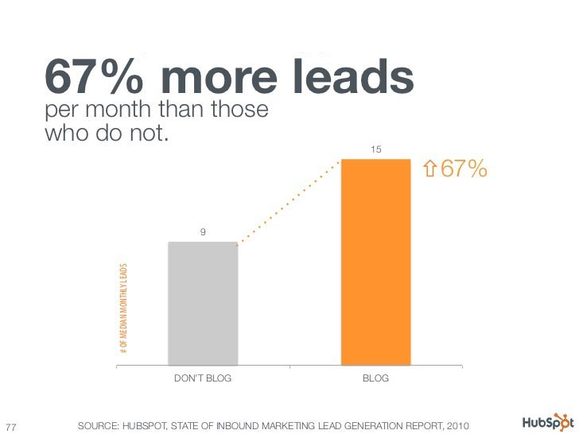
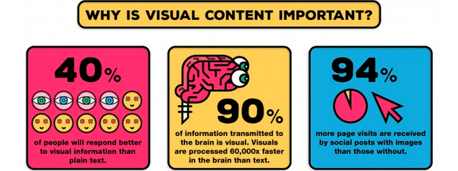
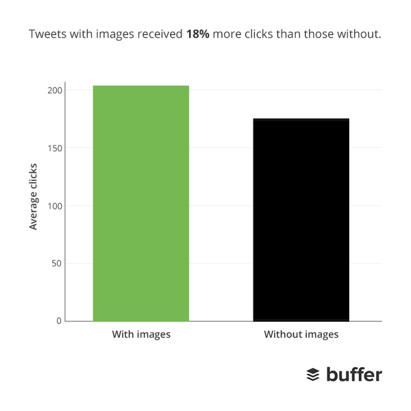
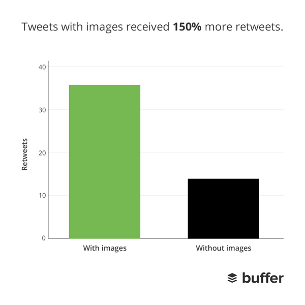
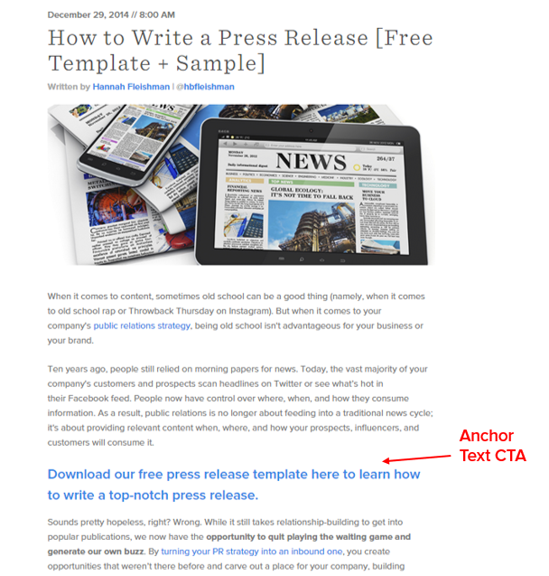
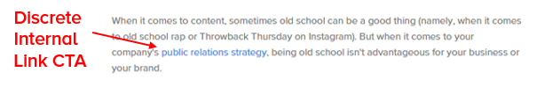
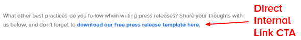

Building a Campaign List: Digital Fundraising (1 of 3)

less then 1 minute
Summary
Digital Fundraising is one of the cheapest and most effective ways to raise money for your online advocacy group and political campaign. The main focus of Part 1 is about content that will generate email addresses.
Basics of Digital Fundraising
The main tool that your fundraising effort is email. The key to getting strong results starts with building your email list. While there are both online and offline ways to build an email list for fundraising, we will be focusing on using Social Media to help build your email list for fundraising.
Social Media
List Building/Lead Generating using social media is a very time consuming effort because the core part of this is creating content that will drive traffic to your blog, while also reaching out to social media influencers. While the initial return on your time might seem minimal the main thing to remember is that any gains that you make will continue to advance your fundraising effort after you stop your list building efforts. In contrast, once you stop a paid campaign, there are no residual gains that can be made.
Blog
Blogs are the best way for an organization or advocacy campaign to reach your audience and find supporters online.

Content
For an Online Activist Group and Political and Issue Campaign there a 3 types of content that will help your effort.
-
Press Release: Should be short and act as announcements for the Organization, such as fundraising number or upcoming event. While a lot of people will copy the text into twitter it is better to link to it with a twitter card, and retweet it multiply time through the day.
-
Technical: Are either research, or policy on your issue. While reporting on other research or policy initiatives is ok. It is better for you to do original work, which is often a key component to this type of content getting shared. You can also do How To’s to help people who want to make a difference and help out in their day.
-
Narrative: This is a personal story that talks about the effects of not acting on your issue, and should try to create an emotional connection with an uplifting ending.
Consumer psychologist Dr Brent Coker from the University of Melbourne has identified four key elements present in viral videos, and revealed four common factors:
- Shareability’ on social media. The video content must make the sharer look good to their peers.
- Viewers must be able to connect to the content. Activating memories via music and nostalgia are key to getting the audience to connect to the video.
- Large emotional range. Clips that quickly take the viewer from an emotional low (sadness or unfairness) to an emotional high (joy, love or justice) are more likely to go viral.
- ‘Frisson’ or primitive feeling of excitement or thrill. There is often a physical response to a viral video, hairs standing on the back of the neck and goosebumps.
Source phys.org
While telling the story about the cause you are trying to help is one of the best approaches because it can incorporate all 4 points of viral content. You can create How To’s Listicles that will help you raise brand awareness by getting shared. A listicle value focused around shareability and due to 6 in 10 people sharing links without reading them the most important thing that focus on is the Headline.
20 Headline Templates
- 100 Useful
____ - Top
#Tips For____ #Expert____Tips# ____Do’s and Don’ts#Common____Mistakes- Where To Find
____ - How to
____Like a Pro/Boss - How to
____in#Seconds - What To Do With
____ # ____Tips____VS____#Bad____Habits____Facts and Myths#Ways to____- What Everyone Ought to Know About
____ - A Cheat Sheet For
____ - The Real Truth About
____ - Top World Cheapest/Best/Worst
____ - How To
____in#Easy Steps #Quick____Tips
The best performing posts include images because, visual elements are your bait and anchors for keeping supporters on your page. So incorporate as many images, videos, and other fancy visuals into your content as you can. This will help you get mass appeal and keep your audience emotionally attached to your cause.

While creating visual content (.ie photos, infographics, and videos) can be more difficult for some, but the benefit spreads to your social media outreach, and help expand awareness for your cause and organization. A study on Buffer found that tweets with images received 18% more clicks and tweets with images are retweeted 150% more than ones without

Call-to-Action (CTA)
The most important part of your blog is to have multiple call-to-action (CTA). The best place to have a CTA is to have it as anchor text:

Hubspot had found that in past they tracked, the anchor text CTA was responsible for the largest percentage, with between 47% and 93% of the post’s leads come from the anchor text CTA. When you are writing your anchor text CTA you should use <h3> because <h1> and <h2> are used by accessibility software as navigation points. The other major point of the study was the use of ‘internal link CTA’ which are placed in the content like normal links.


Between 83% and 93% of each post’s leads came from anchor text CTAs and internal link CTAs.
Putting it All Together
Once you start building your email list and fundraising list you just need to focus on repeating your organization’s outreach and creating quality content. Things to keep in mind:
-
Visual content will perform the best
-
The process can be slow to start, but will pay off in the long term.
-
Make sure you have high quality contents
-
Make sure you have multiple call-to-action
Part 2: Finding Influencer
In Part 2 we’ll go over how to find and reach out to influencers to help expand the reach of your content and tap into new supporters who haven’t heard of you.